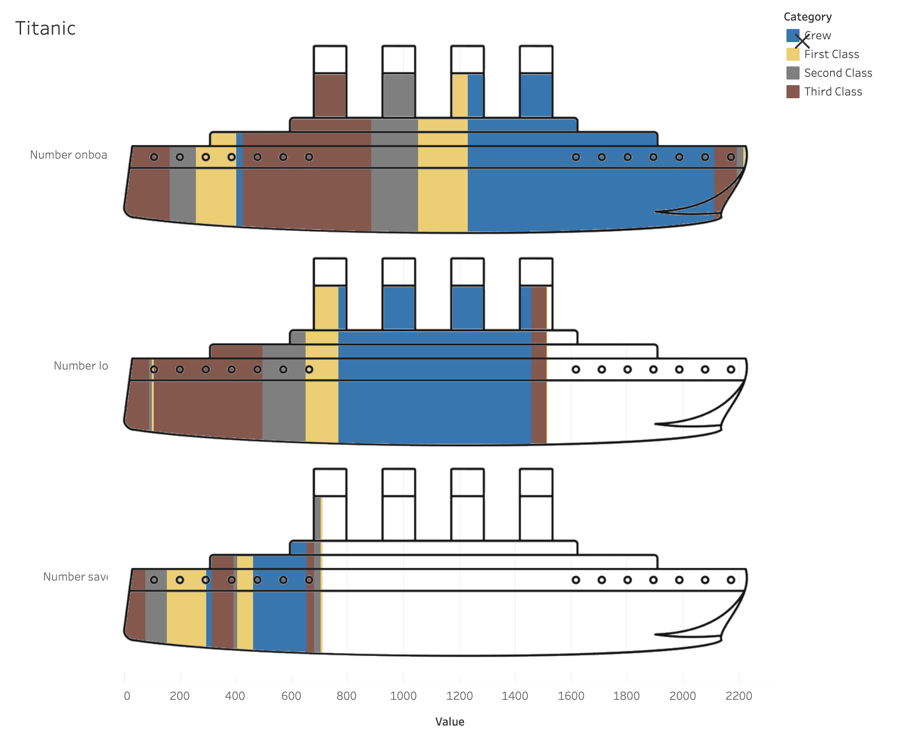

The app above was created using the Streamlit library in Python to visualize the number of COVID-19 cases and deaths over time. The app can be used to compare rates of cases/deaths of up to ten different states against each other.

Above is a chart showing the number of people on the Titanic – the total number onboard, the number who died, and the number saved. The people are categorized by color into Crew, First Class, Second Class, and Third Class, and are stacked in the bar left to right as Men, Women and Children.
Above is a dashboard created in PowerBI depicting the collision data of NYC, from Jan 1, 2021 through Apr 9, 2023. The collision data depicts date, time, location, contributing factor, and vehicle type and is interactive – changing the filters will show only the data that fits the selected criteria. *PowerBI cannot be hosted on this website, so what is shown above are screenshots of the dashboard. If you want to check out the interactive aspect, please click the button below to download the file
ChatGPT was used to create an interactive sorting hat - the first question relates to age because the questions that follow are age relative. The questions are situation based, with the user having to type in their response and why, with the AI then breaking down your response into the house traits.
As most people are a blend of characteristics, the Sorting Hat will sort you once you are 'provably' 40% in a single house. It will also give you a breakdown of the percentages for other houses. I'm a Ravenclaw, click here to test yourself!